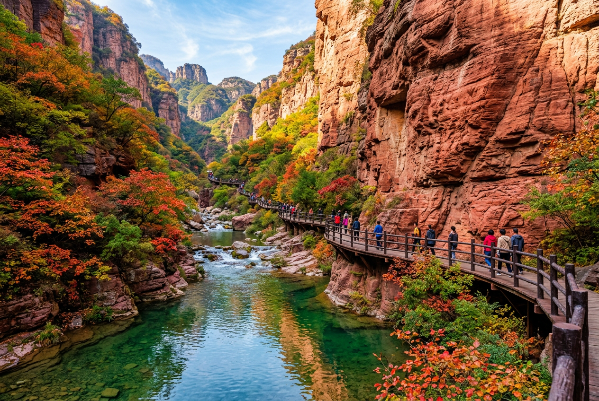
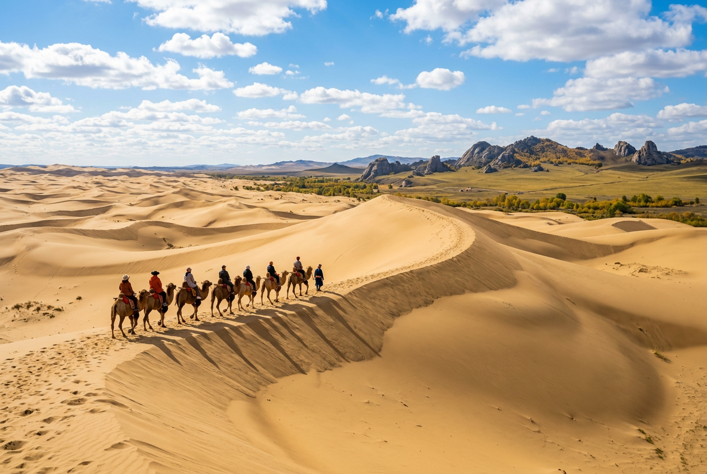

两条路线，到底哪条更好玩？
北京出发，避开人海，3～4 天。一条玩水看猴、清凉省心；一条滑沙骑骆驼、塞外撒野。下面把两条路线掰开揉碎讲清楚，方便咱们全家一起拍板。

路线 A · 山水清凉 3 天 2 晚 云台山红石峡 · 红岩碧水，亲水栈道云台山
河南 · 焦作 · 修武县人称「北方小九寨」，红石峡踩水打水仗 + 猕猴谷喂猴子 + 潭瀑峡溯溪看瀑布，山、水、猴一次集齐，10 月水量好、红叶渐起，正是最好看的季节。
为什么孩子会爱上云台山三大招牌体验，逐个说清楚
红石峡 · 亲水栈道踩水打水仗
云台山最精华的一段，红色丹霞岩壁夹着一汪碧绿的溪水，木质栈道就贴着水面搭。孩子卷起裤腿就能踩水、打水仗、捞小鱼，凉快又好玩，拍照也出片。
猕猴谷 · 近距离喂太行猕猴
野生太行猕猴就在身边，孩子可以近距离观察、投喂猴子，看它们抢食、打闹，全程「哇」声不断。是娃公认的保留节目，注意听从景区指引、别逗急了猴子。
潭瀑峡 · 清凉溯溪看瀑布
三步一泉、五步一瀑，一路沿着溪流往上走，孩子边走边玩水，累了就在潭边歇脚，是整条路线里最凉快、最不累的一段。
3 天怎么玩大致节奏，先有个数
高铁到焦作 · 入住云台山脚下
北京坐高铁直达焦作（约 4.5 小时），转短途到云台山脚下的酒店住下，早点休息、养精蓄锐，第二天起个大早进山。
云台山主景区一整天
上午先走红石峡（精华段，趁人少先玩），下午潭瀑峡溯溪 + 猕猴谷喂猴子。晚上回焦作市区，尝一碗当地烩面。
补一个轻松项目 · 返京
上午按孩子兴趣挑一个轻松的（云台溶洞钻洞，或怪坡园看「水往高处流」），下午高铁返京，晚饭前到家。
沿途还能玩焦作本地就有这些，顺路就能安排
 峡谷溶洞★ 5.0
峡谷溶洞★ 5.0云台溶洞
位于修武县西村乡，钟乳石溶洞，洞里常年清凉。
孩子玩点：钻溶洞探秘，看石笋、石钟乳的千奇百怪，凉快又长见识。
 5A 森林公园★ 4.6
5A 森林公园★ 4.6焦作神农山
「神农白鹤松，九州一奇观」，可坐缆车上下，玩约 1 天。
孩子玩点：缆车上山看白鹤松、龙脊长城，视野开阔，比纯爬山省力。
 游乐园
游乐园承享欢乐世界
「海陆空三栖游乐体验」于一体的大型乐园。
孩子玩点：水乐园 + 陆乐园，各种游乐设施放电，玩水玩项目一次满足。
 动物园
动物园焦作森林动物园
森林里的动物园，环境自然。
孩子玩点：近距离看动物、体验喂食，孩子和动物互动最开心。
 儿童乐园★ 4.6
儿童乐园★ 4.6焦作怪坡园
「难以破解的自然之谜，神奇无比的科技奇观」，玩 2～3 小时。
孩子玩点：车往坡上溜、水往高处流，孩子觉得神奇又好玩，好奇心拉满。
 河南沿线
河南沿线还想再远一点？
云台山地处河南，顺路可往洛阳、开封方向延伸。
可选方向：少林寺（登封）、龙门石窟（洛阳）、清明上河园（开封）。
可顺路延伸多请一天假，就能多逛一座城
少林寺 · 登封
功夫发源地，看武僧表演、塔林，男孩多半会迷上。
龙门石窟 · 洛阳
千年石窟群，顺带历史启蒙，震撼又有文化。
清明上河园 · 开封
北宋市井风情，穿古装逛园子，孩子觉得新鲜。

路线 B · 塞外撒野 4 天 3 晚 玉龙沙湖 · 金色沙丘，骑骆驼走沙脊玉龙沙湖
内蒙古 · 赤峰沙漠 + 草原 + 石林三合一，滑沙、骑骆驼、沙地越野，再看克什克腾草原骑马、石林奇观。人少景野，塞外风光对孩子是全新的世界。
为什么孩子会爱上玉龙沙湖三大招牌体验，逐个说清楚
沙漠 · 滑沙骑骆驼、沙地越野
从高高的沙丘上一路滑下来，骑着骆驼慢悠悠走沙脊，再坐沙地越野车冲沙——沙漠里最经典的玩法一天全安排上，孩子疯玩到不想走。
克什克腾草原 · 骑马撒欢
在辽阔的草原上骑马，看牛羊成群、秋色金黄。孩子第一次离草原这么近，撒开腿跑，比任何游乐园都痛快。
石林 · 地质奇观探险
阿斯哈图石林（克什克腾石阵）是冰川遗迹形成的花岗岩石林，一根根巨石立在草原上，像走进了巨人的石头阵，孩子一路「啊」个不停。
4 天怎么玩大致节奏，先有个数
高铁到赤峰 · 市区逛逛
北京坐高铁直达赤峰（约 2.5 小时），下午在市区逛逛红山公园、桥北动物园，早早入住休息。
玉龙沙湖一整天
包车前往玉龙沙湖，滑沙、骑骆驼、沙地越野，晚上可以住沙湖附近，抬头就是满天星。
草原 + 石林
克什克腾草原骑马撒欢，接着去阿斯哈图石林看地质奇观，一天看尽草原与石林。
看秋色 · 返京
上午可选桦木沟或蛤蟆坝看五彩秋色、拍照，下午高铁返京。
沿途还能玩赤峰周边这些，顺路就能安排
 森林公园★ 5.0
森林公园★ 5.0桦木沟国家森林公园
「油彩画廊，摄影天堂」，秋季白桦林五彩斑斓。
孩子玩点：看一整片金黄的白桦林，捡落叶、拍照，秋色美到不像话。
 4A 森林公园★ 4.7
4A 森林公园★ 4.7道须沟风景区
「塞外版纳、天然博物馆」，可玩 1～2 天。
孩子玩点：瀑布、奇石、原始森林，天然大氧吧，边走边探险。
 沙漠草原★ 5.0
沙漠草原★ 5.0蛤蟆坝景区
「秋季绚丽」，沙草相接的摄影胜地，玩约 3 小时。
孩子玩点：看沙丘与草原相连的奇景，随手一拍都是大片。
 4A 博物馆★ 5.0
4A 博物馆★ 5.0喀喇沁旗王府博物馆
国家三级古建兼历史陈列类博物馆，清代蒙古王府。
孩子玩点：看古建筑、听王爷府的故事，边玩边学点历史。
 动物园
动物园桥北动物园
赤峰市区里的休闲好去处。
孩子玩点：到达当天或返程前顺路看看动物，轻松不累。
 动物园
动物园萌动动物乐园
近距离接触小动物的休闲乐园。
孩子玩点：喂小兔子、看萌宠，小龄段也合适。
可顺路延伸多留一天，草原深处更精彩
乌兰布统草原
坝上草原秋色一绝，影视剧取景地，骑马看草原。
达里湖 · 达达线
草原上的大湖，最美草原公路自驾穿越，看鸟看水。
青山大裂痕 · 热阿线
地质奇观 + 草原天路，越往深处越壮美。
一张表看明白
| 比一比 | 云台山 | 玉龙沙湖 |
|---|---|---|
| 交通 | 高铁直达，约 4.5 小时 | 高铁直达，约 2.5 小时 |
| 建议天数 | 3 天 2 晚 | 4 天 3 晚 |
| 玩法类型 | 玩水 · 喂猴 · 看山水 | 滑沙 · 骑骆驼 · 草原石林 |
| 核心体验 | 红石峡踩水、猕猴谷喂猴、潭瀑峡溯溪 | 滑沙骑骆驼、草原骑马、石林探险 |
| 沿途可玩 | 溶洞、神农山、游乐园、动物园、怪坡园 | 桦木沟、道须沟、蛤蟆坝、王府、动物园 |
| 体力消耗 | 中等，节奏轻松 | 较大，玩得野 |
| 国庆拥挤度 | 5A 热门但可控 | 小众冷门，几乎不挤 |
| 接驳难度 | 高铁直达，景区离市区近 | 沙湖距市区较远，需包车 |
| 孩子的记忆点 | 喂到猴子、踩到水 | 滑到沙、骑到骆驼 |
| 一句话总结 | 清凉省心、山水猴齐全 | 塞外撒野、沙漠草原石林 |
选云台山，如果…
- 孩子喜欢玩水、看猴子，想要节奏轻松、路上不折腾。
- 3 天就够，想早点回家休息、不请太多假。
- 更看重「凉快 + 山水景色 + 亲子互动」，家长也省心。
选玉龙沙湖，如果…
- 孩子爱撒野、体力好，想滑沙骑骆驼、看完全不一样的塞外。
- 愿意多留一天，接受包车接驳，追求人少景野。
- 想要「沙漠 + 草原 + 石林」一次看全的稀缺体验。
两条路线均从北京出发、纯内陆不靠海、适合国庆错峰带娃。以上为方向对比，具体车次、门票和价格已略去，先定大方向，再补细节。景点图片来自同程旅行公开资源。